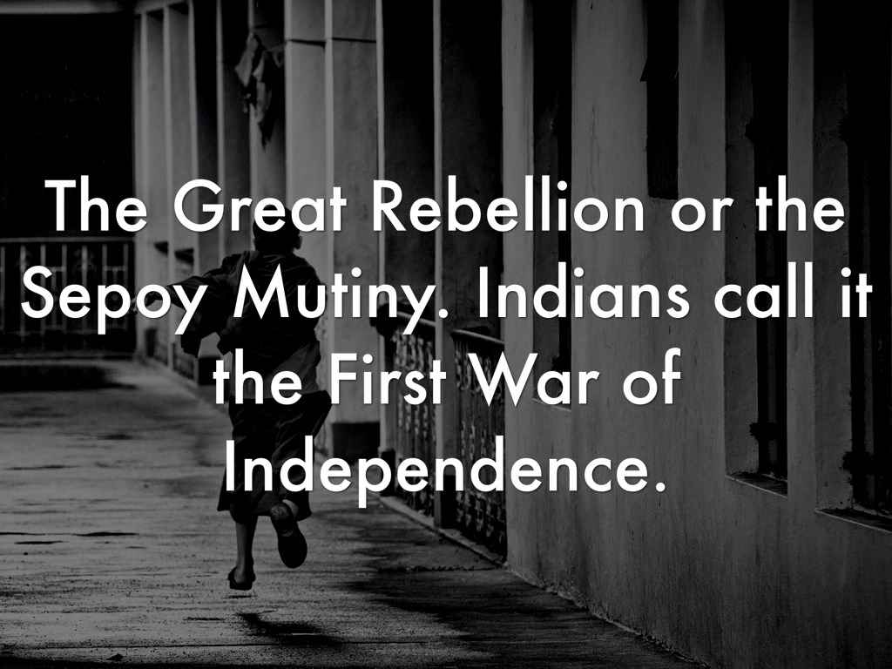

Our History
The Revolt of 1857 —the First War of Independence!
Formation Of the Indian National Congress
Partition Of Bangal
Arrival Of Mahatma Gandhi
Jallianwala Bagh Massacre
Delhi Assembly Bombing
Quit India Movement
By the first half of the 19th century, the East India Company had brought major portions of India under its control.
One hundred years after the Battle of Plassey, anger against the unjust and oppressive British Government took the form of a revolt that shook the very foundations of British rule in India.

Allan Octavian Hume,Dadabhai Naoroji and Dinshaw Wacha,members of Theosophical Society,forme Indian National Congress in March 1885
The party started negotiating terms with the British empire and organise movements ever since.
It started with only 72 delegates. The Congress became stronger by the day with over 15 million members by the end of the movement in 1947.
The government announced the idea for partition in January 1904. The idea was opposed by Henry John Stedman Cotton, Chief Commissioner of Assam (1896–1902). The partition was enacted on 16 October 1905, by Viceroy Curzon, and Cayan Uddin Ahmet, the Chief Secretary of Bengal.
The Lower Bengal was divided into two new provinces: "Bengal" province, composed of the Hindu-majority, largely Bengali speaking divisions of Patna, Baghalpur, Bardwan and Presidency administered from Calcutta, and the eastern Muslim-majority divisions of Chittagong, Rajshahi and Dhaka, as well as the states of Comilla, Sylhet and Tripura united within the Eastern Bengal and Assam province with Dhaka as the capital.
The reason behind the partition that was officially announced was that the Bengal province was too large to be administered by a single governor and so it would be partitioned on administrative purpose. The real reason behind the partition was political and not administrative. East Bengal was dominated by the Muslims and West Bengal by the Hindus. Partition was yet another part of the divide and rule policy. The scars resulting from the partition of Bengal have never completely healed and can still be seen today.
After Fighting agianst the colonial empire in South Africa,Gandhi returned to India in 1915. He started organising peasents and labourers to protect against oppressive colonial laws such as land tax and colour specific rules. He joined the congress party in 1921 and led Nationwide movements aginst the British Empire.
This changed the tone of freedom movement in India, gave birth to rebels such as Bhagat Singh and unmasked the 'enlightened' colonisers.Rabindranath Tagore rejected knighthood to protest against the genocide.
In 1929, Bhagat Singh and Batukeshwar Dutt threw political handouts and smoke bombs at the Delhi Legislative Assembly.
The rebels done by both the members of Hindustan Samajvadi Prajatantra Sangha aimed at putting forth their arguments against the British government through legal trial.
Bhagat Singh and Batukeshwar Dutt became the face of youth resistance against British India.
Mumbai’s Gowalia Tank Maidan also known as August Kranti Maidan is the place where Mahatma Gandhi delivered his speech marking the beginning of the Quit India Movement. Mahatma along with other leaders gathered here on August 8 and 9, 1942. In his speech at Mumbai’s Gowalia Tank, Gandhiji called the nation to ‘Do or Die’ in his speech. Within hours of the speech, almost the entire INC was imprisoned without trial.